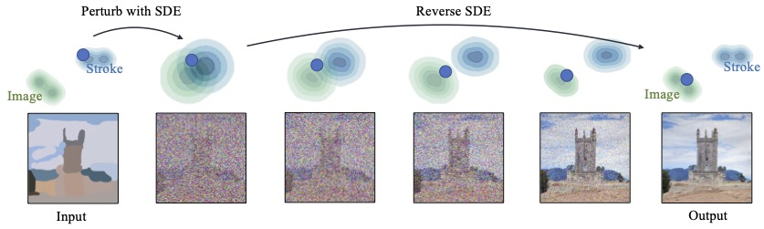
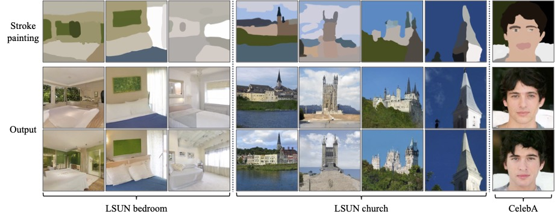
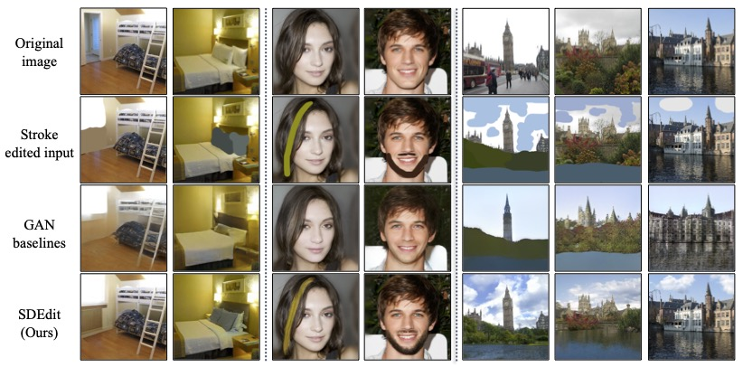
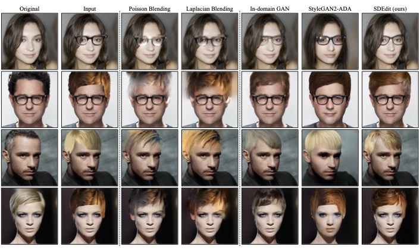

SDEdit: Image Synthesis and Editing with Stochastic Differential Equations
Chenlin Meng
Yang Song
Jiaming Song
Jiajun Wu
Jun-Yan Zhu
Stefano Ermon
Stanford University Carnegie Mellon University
Paper | GitHub | Colab
SDEdit is an image synthesis and editing framework based on stochastic differential equations (SDEs). SDEdit allows stroke-based image synthesis, stroke-based image editing and image compositing without task specific optimization.
{kind=link}
Abstract
We introduce a new image editing and synthesis frame-work, Stochastic Differential Editing (SDEdit), based on arecent generative model using stochastic differential equa-tions (SDEs). Given an input image with user edits (e.g.,hand-drawn color strokes), we first add noise to the inputaccording to an SDE, and subsequently denoise it by simu-lating the reverse SDE to gradually increase its likelihoodunder the prior. Our method does not require task-specificloss function designs, which are critical components for re-cent image editing methods based on GAN inversion. Com-pared to conditional GANs, we do not need to collect newdatasets of original and edited images for new applications.Therefore, our method can quickly adapt to various edit-ing tasks at test time without re-training models. Our ap-proach achieves strong performance on a wide range of ap-plications, including image synthesis and editing guided bystroke paintings and image compositing.
Paper
arXiv 2108.01073, 2021.
Citation
Chenlin Meng, Yang Song, Jiaming Song, Jiajun Wu, Jun-Yan Zhu and Stefano Ermon. "Image Synthesis and Editing with Stochastic Differential Equations", in arXiv, 2021.
Bibtex
Introducing SDEdit: a powerful image synthesis and editing technique
|
The key intuition of SDEdit is to "hijack" the reverse stochastic process of SDE-based generative models, as illustrated in the figure below. Given an input image for editing, such as a stroke painting or an image with strokes, we can add a suitable amount of noise to make its artifacts undetectable, while still preserving the overall structure of the image. We then initialize the reverse SDE with this noisy input, and simulate the reverse process to obtain a denoised image of high quality. Because the denoised image and the input resembles each other with noise perturbations, they also share the overall image structure. |
|  |
{kind=link}
Synthesizing images from strokes with SDEdit
|
Given an input stroke painting, our goal is to generate a realistic image that shares the same structure as the input when no paired data is available. We present stroke-based image synthesis with SDEdit on LSUN bedroom, LSUN church and CelebA-HQ datasets. We notice that SDEdit can generate multiple diverse images for each stroke painting. |
|  |
{kind=link}
Scribble-based image editing with SDEdit
|
Given an input with user added strokes, we want to generate a realistic image based on the user's edit. We observe that our method can generate image edits that are both realistic and faithful (to the user edit), while avoid making undesired modifications. (See the figure below.) |
|  |
{kind=link}
Image compositing with SDEdit
|
Given an image, users can specify how they want the edited image to look like using pixel patches copied from other reference images. Our goal is to generate a realistic image based on the user's edit. In the figure below, "original" stands for the orignal image, and "input" stands for an input designed by users. We observe that SDEdit can generate both faithful and realistic images with much lower LPIPS scores compared to GAN baselines. |
|  |
{kind=link}